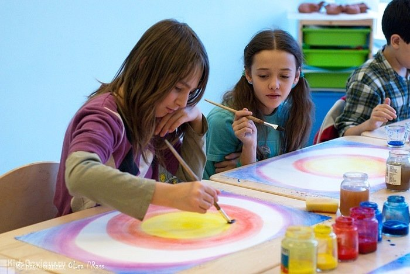

Вадьдорфские школы в России
Вальдорфские школы официально существуют в России с начала 1990-х годов и сочетают международные стандарты с российскими требованиями к образованию. Большинство школ — частные, но некоторые всё же имеют государственную аккредитацию. Большинство работают по двойной образовательной программе: официальная программа РФ (ФГОС) и вальдорфская методика как основа педагогического подхода. Школы проходят проверку Рособрнадзором и обязаны обеспечивать сдачу государственной итоговой аттестации.
В Санкт-Петербурге есть вальдорфские школы как платные, так и государственные:
- Вальдорфская средняя школа в Дачном № 658
- Вальдорфский детский центр в Порошкино
- «Источник»
- Центр искусства воспитания